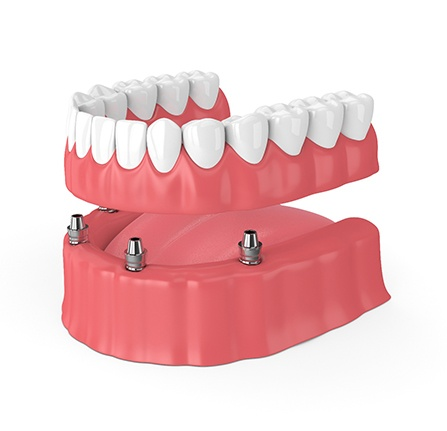
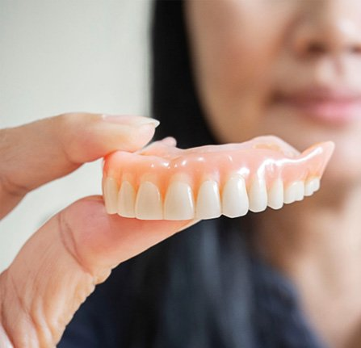
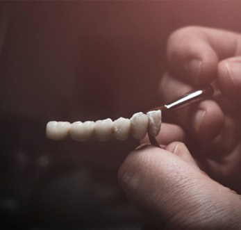
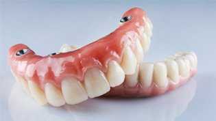
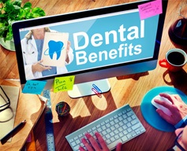

Welcoming New and Existing Patients
Have you been going through life with fewer teeth than you’d like? At Sweet Smiles Family Dentistry, we’re here to help you get your smile back with a set of beautiful dentures!
We use the highest quality materials and a patient-centered approach when crafting our prosthetics, so if you’re missing teeth in Grafton, we can make you a set of dentures that can help you talk, chew, and smile again. Call us today for a consultation and we’ll talk about whether dentures are a good choice for you.
After scheduling a consultation with our team, you'll visit our office for a thorough assessment of your oral health. This will help us identify the most suitable method for replacing your missing teeth. We must ensure your gums are in excellent condition and your jawbone is sturdy enough to support the restorations. That way, we can prevent any premature need for replacements. Rest assured – our team uses only top-notch materials to craft prosthetic teeth that are durable, comfortable, and closely resemble natural teeth. Click on the button below to learn what makes an ideal candidate for dentures, as well as other restorative options you can consider.
First things first, you need to understand what causes missing teeth and why they need to be replaced. According to the American College of Prosthodontists, some common reasons include tooth decay, gingivitis, accidental trauma, and poor oral hygiene. Sometimes even certain system conditions can increase the risk of tooth loss!
If you’re missing one or more teeth, you must replace them as soon as possible. Otherwise, you could experience complications like difficulty eating and/or chewing, trouble speaking, facial sagging, and lower self-esteem. Further issues may include gum recession, dental drift, and jawbone deterioration.
For most people, dentures are a viable solution for tooth loss. This restorative choice is ideal for patients experiencing moderate to severe tooth loss, as well as those with sensitive or decayed teeth. However, it's important to have sufficient healthy gum tissue and a sturdy jawbone for a successful restoration.
The extent of tooth loss can also impact the type of denture recommended. Depending on whether you've lost one, several, or all of your teeth, you may choose from full, partial, or even implant dentures. These options are typically more cost-effective than alternative treatments, making them a great choice for budget-conscious individuals.
Even if dentures aren't a suitable option for you, there are alternative solutions you can explore:
We offer three different kinds of dentures: partial, full, and implant. Each of these kinds of dentures is useful in different situations and adheres to the mouth in different ways.
Dr. Muddana and Dr. Chanana will be able to tell you more about which kind of dentures are best for your unique circumstances, but here is a brief rundown of what each of them is used for.
Even if you have some teeth, a big gap in your smile can make it hard to smile with confidence. Partial dentures are designed to replace a few teeth at a time and consist of a thin acrylic base with a few imitation teeth. This is secured to the surrounding teeth with metal hooks, allowing them to hold fast in place.
If you’re missing all of your teeth, your dentures naturally won’t have anything to hook onto. Full dentures are therefore designed to attach directly to the gums via suction.
The base of full dentures is meticulously molded to the gums so that they can stay comfortably and firmly in position.

If the idea of taking out your dentures each night doesn’t appeal to you, implant dentures can be a great choice. As you might have guessed, these dentures are permanently affixed to dental implants, which are metal posts surgically placed in the jawbone.
This option offers greater stability than removable dentures, making it a great choice for people who want the strongest bite possible.

Once you decide that dentures are right for you, what’s next? By understanding how your dentures are made and what materials they are comprised of, you will appreciate your new smile that much more! Whether you opt for partial or full dentures, here are the steps you can generally expect. If you have any questions, don’t hesitate to give us a call.

Dentures are made up of two different parts – the base and the replacement teeth. Here is what each component looks like:
Each denture is custom-made for the patient’s mouth, so it requires a multi-step process. Here is a step-by-step of what this typically looks like:
It is normal for your dentures to feel mildly uncomfortable at first. It’s common for patients to experience some soreness when speaking and eating. With time, your mouth will adjust to your dentures, and they will feel very similar to your natural teeth. To speed up this adjustment process, it helps to stick to softer foods, exercise your facial muscles, and experiment with an adhesive. If discomfort persists or you have any concerns, don’t hesitate to reach out to us.
Losing multiple teeth can make everyday activities like eating, speaking, and confidently smiling challenging. Fortunately, dentures in Grafton offer an effective solution, restoring your smile and bringing life-changing benefits. If you've experienced tooth loss, consider giving your smile a second chance with this method of tooth replacement! You can learn more about how opting for dentures can enhance your quality of life by reading below.
Those without teeth may struggle to accept their tooth loss, which can lead to social anxiety and a higher risk of sadness and depression. However, by rejuvenating both the look and function of your smile with dentures, you are more likely to enjoy a boost of confidence and improved self-esteem!
It’s no surprise that tooth loss can make it difficult to speak clearly. Proper positioning of the lips and tongue is incredibly important for articulating words. Certain sounds become challenging without the tongue touching the teeth. Luckily, because dentures act as replacements for missing teeth, they can help you enunciate more clearly. With a brief adjustment period, you'll find yourself speaking more distinctly and effortlessly!
Many nutrient-rich foods, such as vegetables, fruits, and proteins, are tough in texture. Tooth loss can hinder thorough chewing, leading to problems like indigestion and malnutrition. With dentures, you can enhance your chewing capabilities, allowing you to enjoy a broader diet rich in essential vitamins and minerals necessary for optimal health.
Choosing to restore your smile with dentures, especially when you still have some remaining natural teeth, can help stabilize them to prevent shifting. Additionally, dentures share the load of chewing, which can minimize wear and tear on your existing teeth.
Making a positive first impression is extremely important when it comes to job interviews, sales, and getting promotions. A complete and attractive smile offers a distinct advantage! In fact, a 2019 study revealed a negative association between poor oral health and the likelihood of employment.
At Sweet Smiles Family Dentistry, every prosthetic that we craft is customized for each of our individual patient’s needs. Due to the highly customized nature of dentures, the cost of the treatment can vary from patient-to-patient. However, we’ll provide you with a detailed estimate before you commit to moving forward with the procedure and walk you through each of your payment options. In many cases, dental insurance plans will cover at least a portion of the cost of your treatment, but if you’re underinsured or uninsured, we also offer savings through our In-House Membership Plan as well as additional financing through CareCredit.

There are several personalized factors that we take into account before providing you with an estimated price for your treatment. Some of these include:

While implant dentures have a higher up-front cost than traditional dentures, they’re a great long-term investment. Due to their ability to last over 35 years, you’ll be able to save money with fewer adjustments and replacement visits during their lifespan. They’re also able to prevent jawbone deterioration and other impacts on your oral and overall health, which can help you avoid needing a bone graft in the future.

While most dental insurance plans will cover at least a portion of the cost of dentures, every plan is different, so you’ll need to call your provider directly to find out what you’ll be expected to pay out-of-pocket. Our team at Sweet Smiles Family Dentistry is an in-network provider with several major PPO dental insurance plans, and we accept Medicaid so you can get the most out of your coverage.
In addition to being an in-network provider with many insurance plans, we also partner with CareCredit to help patients split the total cost up into more manageable monthly payments. If you’re a member of our In-House Membership Plan, you can also save 15% on your procedure as well as receive coverage for all of your basic dental needs throughout the year.
Sure enough, dentures can reliably boost your smile’s looks and function. (You wouldn’t bother with them otherwise.) That said, these prosthetics need regular care to work well. Daily upkeep is vital for dentures to last a long time. Luckily, Sweet Smiles Family Dentistry is here to assist: listed below are several good tips on caring for dentures. By using them, your new teeth will stick around for years to come. Keep reading to learn more, or call our office for the details!
You should always rinse your dentures after meals. With this habit, you’ll keep food and plaque from sticking to your grin. You’d then be at a much lower risk of oral issues.
Still, don’t use hot water for these rinses. Intense heat can actually warp a denture’s material. Given this fact, a steamy rinse would ruin your prosthetic’s fit.
Besides post-meal rinses, dentures also need once-daily cleanings. Such sessions remove germs and debris from the prosthetic.
Cleaning a denture isn’t that hard. Once the appliance is out of your mouth, just brush it with a toothbrush and hand soap. (Be careful to avoid regular toothpaste; it’s abrasive and erodes dentures.) You can also soak it in a cleaning solution if there’s time. Either way, rinse the denture before returning it to your mouth.
While tough, dentures aren’t invulnerable. They’ll break if put under a strong force. So, always keep your dentures safe when they’re not in use.
Of course, several methods can protect dentures. One is to place a towel in your sink during cleanings. (That way, your dentures would be cushioned from falls.) Alternatively, you might store dentures in a secure case. The latter will keep pets or kids from breaking your replacement teeth.
To be honest, you shouldn’t wear dentures to sleep. It’s best to remove them from your mouth before bedtime. If possible, you could even soak them in a denture solution overnight.
While dentures are lifelike, using them constantly harms your health. The habit restricts your gum’s circulation, irritating your mouth’s tissues. It also increases your tongue’s plaque levels, raising the risk of cavities and gum disease. Always wearing dentures can even cause pneumonia.
Once you’ve begun using dentures, look for changes in them or your mouth. Unexpected shifts can cause problems that need a dentist’s help. In particular, note whether you have mouth sores, gum irritation, or infections.
Most of all, see Dr. Muddanna if your dentures fit poorly or get damaged. Trying to fix the prosthetics yourself won’t end well. In contrast, our resident dentist can refit or replace the dentures.
Unlike other kinds, All-on-4 dentures can’t be removed. They thus require different aftercare methods. Typically, these include:
Dentures are an excellent way to replace a lot of teeth all at once, but that can pose a pretty large life change for people who have been missing teeth for a while. It’s natural to have a lot of questions about these prosthetics before you take the plunge.
We’ll have a long conversation about what your particular treatment will look like at your consultation, but until then, here are some of the answers you may be looking for.
Talking with dentures isn’t necessarily hard, but may take some getting used to when compared to talking without them. It’s common for patients to say they have a little bit of a lisp when talking with their dentures at first, so you may need to set aside some time to practice reading aloud or conversing with them in.
Some people also thrust their tongues against their bottom teeth when they speak, which can cause their lower dentures to come loose. This habit can be deeply ingrained and may take some time to unlearn.
That said, with a little bit of practice, anyone can talk easily with dentures. In the meantime, focus on speaking slowly and clearly until you get the hang of it.
Your teeth act like tentpoles that support the muscles on your face. Without them, it’s common for people to start to see their facial muscles sag, causing them to develop wrinkles prematurely.
Dentures can support your face, reversing the effects of tooth loss on your skin and making you look younger. This is why we work so hard to make sure that your restoration fits perfectly and offers the support that it should.
We strongly recommend that our patients take out their dentures overnight. This gives your gums much-needed time to breathe, preventing the buildup of bacteria and saving you from uncomfortable sore spots.
It’s also a good idea to leave your dentures in a soaking solution while you’re sleeping. This keeps them fresh and free of bacteria so that they’ll be ready for you to wear in the morning.
It’s important to brush your dentures every day, but you shouldn’t be using toothpaste when you do. While toothpaste feels smooth on your teeth, it actually contains mild abrasives. Your dentures are not as hard as your enamel, so toothpaste can leave tiny scratches on your prosthetic that allows for bacterial buildup.
Similarly, you should use a soft-bristled toothbrush to clean your dentures, not one with hard bristles. Use this toothbrush to clean plaque off of your dentures after every meal.
9:00am – 6:00pm
9:00am – 6:00pm
9:00am – 6:00pm
9:00am – 6:00pm
8:00am – 2:00pm